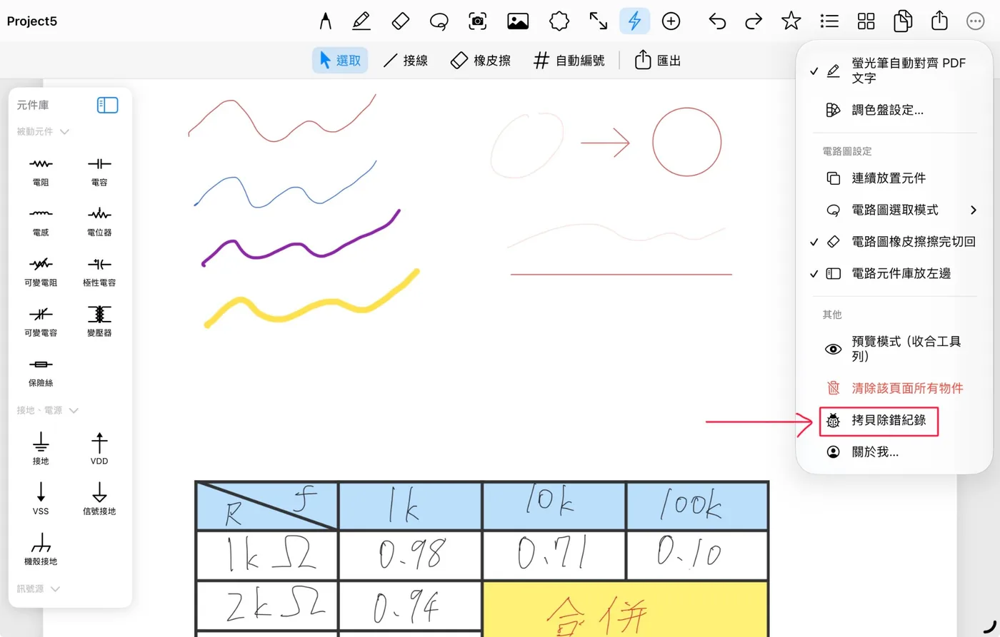

需要幫忙嗎？
先看看下面的常見問題。沒有解決的話，到 GitHub Issues 或 Threads 告訴我。
回報問題時最好附上除錯紀錄。遇到問題後先不要關掉 App，在筆記本右上角的「⋯」選單點「拷貝除錯紀錄」，再貼到 Issue 或 Threads 私訊裡。紀錄只存在 App 的記憶體裡，關掉 App 就會清掉。

開始使用
支援哪些裝置？
iPadOS 18 以上的 iPad。目前沒有 iPhone、Mac 或 Android 版本。
一定要有 Apple Pencil 嗎？
不用。在書寫設定打開「用手指書寫」就能用手指寫，不過用 Pencil 的體驗最完整。
怎麼切換介面語言？
在資料庫右上角的「⋯」選單選擇語言，關掉 App 再重新開啟就會套用。
匯入與匯出
可以匯入什麼？
PDF、裝有多份 PDF 的 zip，以及 PaperNote 檔。有密碼的 PDF 要先解除密碼。
怎麼從其他筆記 App 搬過來？
先在原本的 App 匯出成 PDF（多本可以打包成 zip），再匯入 PaperNote。PDF 裡原有的筆跡通常會變成頁面內容，不一定能再編輯。
匯出時該選哪一種格式？
給別人看或列印選 PDF；之後還要在 PaperNote 繼續編輯，選 PaperNote 檔。
書寫與翻譯
手掌一直留下筆跡怎麼辦？
確認左手或右手設定正確，並關閉「用手指書寫」，手指就只會捲動頁面。
為什麼不能翻譯？
翻譯使用 iPadOS 的語言包。請到「設定 → App → 翻譯 → 已下載的語言」下載原文和譯文的語言。
掃描的 PDF 選不到字？
第一次選字時需要等文字辨識完成。太模糊或手寫的內容可能辨識不到。
備份與還原
怎麼備份？
在資料庫右上角「⋯」→「雲端備份（Google Drive）」連結帳號。自動備份會每 10 分鐘和關閉筆記本後進行，也可以按「立即備份」。
換 iPad 怎麼搬？
先在舊 iPad 按「立即備份」並等它完成，再到新 iPad 連結同一個 Google 帳號，按「從 Google Drive 還原…」。
還原會蓋掉現在的筆記嗎？
不會。只會加入這台 iPad 沒有的筆記本，不覆蓋、也不刪除現有的。
永久刪除之後，雲端的備份呢？
下次備份時會移到 Google Drive 的垃圾桶，之後不會再被 App 還原。
怎麼取消 Google Drive 授權？
在雲端備份頁按「中斷連結」。要完全撤銷，再到 Google 帳戶的第三方存取權限移除 PaperNote。
資料安全
刪錯了怎麼辦？
筆記本和資料夾在垃圾桶，頁面在「頁面 → 最近刪除的頁面」，都保留 30 天。
刪除 App 會怎樣？
iPad 上的筆記會一起刪除。刪除之前請先備份，並確認備份已經完成。